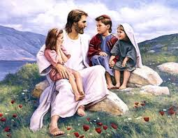

В начале было Слово

Большой вход?
Каждый декабрь мы начинаем предвкушать самый большой праздник года: Рождество! Все магазины светятся огнями и мишурой (кажется, с каждым годом все раньше и раньше), мы навешиваем фонари вокруг домов и украшаем елку, и даже улицы городов и поселков сияют мерцающими огнями вокруг многих зданий. И самое большое волнение из всех? Подарки! Что мы получим? Будет ли это то, на что мы надеялись? Мы просто с нетерпением ждем 25 декабря!

Очень тихий подъезд
Итак, так ли это было 2000 лет назад? Ждали ли люди с нетерпением: все ли их дома были украшены в ожидании рождения Иисуса? Купили ли они друг другу подарки, чтобы отпраздновать долгожданное рождение? Когда Он родился, разнеслось ли по всему миру известие о том, что Спаситель наконец пришел?
Не совсем.

Когда Иисус родился в Вифлееме, также называемом Городом Давида (помните?), лишь немногие люди действительно знали об этом. Там были Мария, мать Иисуса, и Иосиф, ее жених. Люди, владевшие конюшней гостиницы, где остановились Мария и Иосиф, вероятно, знали, что женщина родила, но для них это не имело особого значения.
Но мы знаем, что на небесах была великая радость, потому что в Луки 2:8-14 говорится, что большая группа ангелов явилась некоторым пастырям в ночь рождения Иисуса. Они не только объявили о рождении мальчика по имени Иисус, но и фактически провозгласили, что Он — Мессия, которого так долго ждал еврейский народ!
Но пройдет еще тридцать лет, прежде чем кто-нибудь еще начнет это понимать.
Четыре человека, четыре истории

В годы, прошедшие после смерти, воскресения и вознесения Иисуса на небеса, четыре разных человека были вдохновлены написать о жизни Иисуса. Первые четыре книги Нового Завета названы в честь людей, написавших эти биографии (их обычно называют Евангелиями): Матфея, Марка, Луки и Иоанна.
Они не обсуждали это друг с другом; они, возможно, даже не знали, что историю об Иисусе писал кто-то другой. Матфей, Лука и Иоанн почти наверняка читали Евангелие от Марка; Ученые полагают, что это была самая первая написанная биография Иисуса. Но четыре Евангелия были написаны независимо друг от друга.

Когда человек рассказывает историю о событии, он обычно пытается включить в него то, что, по его мнению, является наиболее важным. Так было с Матфеем, Марком, Лукой и Иоанном. Некоторые включают события, которых нет у других; некоторые рассказывают события в несколько ином порядке.
Например, только Матфей и Лука рассказывают историю рождения Иисуса. Возможно, по мнению Луки, людям было важно знать, что Иисус родился от девственницы. Жених Марии, Иосиф, не был отцом Иисуса; Иисус был сыном Божьим. (Луки 1:26-38)
Евангелие от Матфея начинается с генеалогического древа Иисуса. Помните ли вы, как в те давние времена Бог обещал Аврааму, что мир будет благословлен через царя, который произойдет из его потомков (Бытие 12:3)? Матфей старается показать нам, что Иисус был прямым потомком царя Давида, который был прямым потомком Авраама. Иисус был исполнением этого древнего пророчества.
В случае с Марком и Иоанном они, кажется, считают само собой разумеющимся, что, когда они писали об Иисусе, все знали, о ком они говорят: «В Свои дни здесь, на земле, Иисус был очень, очень знаменит. Итак, Марк и Иоанн начинают свои рассказы об Иисусе в тот момент, когда Он начал Свое земное служение, то есть когда Иисусу было около тридцати лет.
Неожиданный Мессия

Когда мы узнали о пророках, которые предсказывали, что Израиль падет перед Ассирией и Вавилоном, мы также узнали, что те же самые пророки предсказывали, что из рода царя Давида выйдет Царь, Мессия, Спаситель. Эти пророчества дали евреям надежду, что Израиль снова станет великой нацией, что придет царь, чтобы победить всех врагов Израиля и сделать его сверхдержавой, которая будет править миром.
Но евреи не читали ВСЕ пророчества; а если и были, то они совершенно неправильно поняли некоторые из них. Пророки дали два описания Мессии, которого пошлет Бог. Действительно, нужно было стать могущественным Правителем. Чего евреи не поняли, так это того, что этот Царь придет из самого непримечательного места и что Он не придет с большой помпой (помните тихую ночь в малоизвестном маленьком Вифлееме?). Этот новый король будет человеком, который познает горе, горе и боль на земле, а не царскую славу и власть.
Будучи побежденным, деморализованным народом, евреи не искали Мессию, как смиренный человек Иисус; они искали кого-то гораздо более впечатляющего, чем этот.
И было так, что, когда Иисус пришел и жил среди них, они не узнали Мессию, когда увидели Его.
Учение Иисуса
Помните, что Иисус вырос в месте, которое находилось под властью другой страны: к тому времени это была могущественная Римская империя. Иисус вырос в очень простом обществе; еврейский народ был очень глубоко религиозным, а Его соседями были фермеры, рыбаки или торговцы (Иосиф, муж Его матери, был плотником по профессии).
Возможно, из-за этого Иисус пытался учить духовным истинам, рассказывая истории, называемые притчами, в которых часто говорилось о вещах, которые люди в его обществе были знакомы и понимали:

- земледелец сеет семена на своем поле (Матфея 13:2-23)
- сын, который восстает против своих родителей, но возвращается к ним с великим раскаянием в своих грехах (Лк. 15:11-32)
- пастырь, потерявший одну из своих овец (Матфея 18:10-14)

Фарисеи
Во времена Иисуса священники (в Библии их также называют фарисеями – слово, означающее «отдельные») управляли повседневной жизнью евреев. Священники происходили из одного из двенадцати колен Израиля, которые Бог специально избрал для этой роли: левитов (из колена Левия). Они считали своей задачей не дать еврейскому народу сбиться с пути, как это было в прошлом. Они думали, что их работа — читать и истолковывать Библию для людей. (Вспомните, что мы говорили ранее о Бог желает, чтобы Библия была доступна каждому?)
Иисус не был из колена Левиина, поэтому Иисус не был священником.

Чтобы стать раввином, или учителем библейских истин и знаний, человек должен был пройти длительный период обучения в специальной раввинской школе.
Иисус не посещал раввинскую школу, поэтому фарисеи не считали его «квалифицированным» учителем.
Итак, почти с самого начала Своего служения у Иисуса были разногласия с религиозными правителями. Тем не менее, толпы людей собирались, чтобы послушать учение Иисуса. В одном из самых известных Его учений, называемом «Нагорная проповедь» (его можно найти как в 5-й главе Евангелия от Матфея, так и в 6-й главе Евангелия от Луки), практически каждое Его высказывание противоречило тому, во что фарисеи хотели заставить людей поверить.
Вот некоторые из основных идей, которые Иисус хотел, чтобы его последователи усвоили:
- Бог любит людей и хочет, чтобы они отвечали Ему любовью. Один из способов проявить любовь к Богу — это подчиняться не только букве закона, но и духу закона. Итак, Иисус не только был честен, но и призывал Своих последователей быть милосердными, добрыми и справедливыми.
- Иисус хочет, чтобы Его последователи были известны своей любовью: любовью к своим единоверцам, любовью даже к своим врагам. Бог обещал простить верующим их грехи; Он хочет, чтобы мы простили друг друга.
Самое важное, что Иисус хотел, чтобы знали Его последователи, это то, что Он, Иисус, был Сыном Божьим и что спасение от греха приходит только через Него. Один из самых известных стихов Библии провозглашает Новый Завет, который Бог заключил с человечеством, Иоанна 3:16:
Ибо так возлюбил Бог мир, что отдал Сына Своего Единородного, чтобы всякий верующий в Него не погиб, но имел жизнь вечную.
Это заявление Иисуса было революционным по двум причинам: во-первых, идея о том, что Иисус был Сыном Божьим, была неприемлема для многих евреев. Как мог простой человек быть Богом? Вторая идея, которую религиозные лидеры времен Иисуса не могли принять, заключалась в том, что спасение больше не предназначено только для евреев. Иисус сказал, что ЛЮБОЙ, кто верит в Него, может принадлежать Царству Божьему (Иоанна 1:12).
Саддукеи
Саддукеи, известная, часто богатая группа евреев, живших во времена Иисуса, имели своего рода политическое соглашение с римлянами, так что они пользовались определенной политической властью. Саддукеи иногда брали на себя задачу сбора римских налогов со своих собратьев-евреев и часто действовали нечестно, требуя от людей платить больше, чем им на самом деле причиталось, чтобы они могли оставить долю себе. Саддукеи считались предателями многих евреев из-за их тесных связей с ненавистными римлянами.
Среди евреев часто говорили о восстании; их раздражала суровость римского правления. Саддукеи считали своей задачей сохранить мир между евреями и римлянами. Саддукеи считали, что чем меньше хлопот евреи причинят римлянам, тем легче будет всем.

Проблема с Иисусом
Как мы видели ранее, Иисус учил толпы людей и распространял всем благую весть о Боге и Его любви. Фарисеям это совсем не понравилось; они хотели быть единственным религиозным авторитетом среди евреев. Иисус учил людей думать о духовных вопросах глубже, чем когда-либо делали священники, и они любили Его за это.

Саддукеям также не нравились большие толпы, которые собирал Иисус. Толпой людей было нелегко управлять. Если бы Иисус хотел, чтобы толпы вокруг Него последовали за Ним в восстании против Рима, что они могли бы сделать, чтобы предотвратить это?
Саддукеи знали, что даже большая толпа евреев не сможет противостоять мощи римской армии. Если бы римлянам пришлось подавить еврейское восстание, они бы его полностью раздавили (и около 35 лет после земной жизни Иисуса именно это и сделали). Их политическая власть больше ничего не значила для римлян, а саддукеи не собирались терять свою власть из-за такого подстрекателя толпы, как Иисус!

Однако самое худшее, что сделал Иисус, — это провозгласить людям, что Он на самом деле Сын Божий. Иисус сказал им, что Он — Мессия, которого они так долго ждали. Для фарисеев это было богохульством (крайним неуважением к Богу)! По еврейским законам это было преступлением, караемым смертью.
Снова и снова Иисус совершал знамения и чудеса, подтверждая Своё заявление о том, что он Мессия: Он исцелял больных, делал слепых зрячими и заставлял хромых снова ходить. Он даже воскресил человека из мертвых!
Иисуса воспринимали как угрозу как фарисеям (потому что Он заставлял людей сомневаться в их власти), так и саддукеям (потому что Он мог представлять угрозу их власти).
Фарисеи и саддукеи обычно не были дружелюбны и не сотрудничали друг с другом, но теперь у них появился общий враг: Иисус.

Однажды ночью, когда Иисус молился, Иуда Искариот, человек, который был одним из самых близких друзей Иисуса (Его двенадцать учеников), повел группу фарисеев и саддукеев туда, где, как он знал, Иисус любил молиться, в Гефсиманский сад. Иисус не сопротивлялся аресту, хотя знал, что не совершил никакого преступления.
Обвинители Иисуса отвели Его к Каиафе, первосвященнику храма, чтобы провести тайный суд. Они сказали Каиафе, что Иисус виновен в богохульстве из-за того, что Он заявлял, что является Мессией.

Стоя перед Первосвященником, Иисус сказал: «Я Мессия, и ты увидишь меня сидящим по правую руку Бога». (Марка 14:62)
Хотя были собраны лжесвидетели, чтобы дать «доказательства» против Иисуса, Каиафа решил, что одно только заявление Иисуса было признанием вины. Его приговор заключался в том, что Иисуса следует предать смерти.
Евреи не могли приводить в исполнение смертную казнь без разрешения римского правителя Понтия Пилата. Священники привели Иисуса к Пилату и сказали ему, что Иисус совершил измену: если Он утверждал, что Он Мессия, говорили они, это то же самое, что сказать, что Он был Царем Иудейским. По римским законам никто не мог называть себя царем, кроме Цезаря.
Пилат на самом деле не думал, что Иисус серьезно претендовал на звание царя, поскольку Он даже не выступил в защиту Себя, когда Его судили. Но иудейские священники настаивали на казни Иисуса. Даже когда Пилат предложил им выбор: освободить осужденного убийцу Варавву или освободить Иисуса, все люди кричали, чтобы Иисус был казнен. (Марка 15:6-13)

Иисус умирает и воскресает
Распятие было формой смертной казни, применявшейся римлянами. Это был самый позорный способ умереть. Хотя в искусстве Иисус обычно изображается носящим набедренную повязку, на самом деле с Него сняли одежду, так что Он оказался обнаженным на всеобщее обозрение. Это было особенно позорно, потому что римляне распятие применялось только для самых худших преступников.
После ночи избиений, сначала Его еврейскими обвинителями, а затем римскими стражниками, Иисуса заставили нести Свой крест к месту, где Его должны были распять. Он был так слаб от всех Своих побоев, что не мог вынести тяжести креста; раба, которого они встречали по пути, заставили нести за Него крест Иисуса.
Когда они прибыли к месту распятия, римские стражники пригвоздили руки Иисуса к кресту. Затем они сделали ставку на одежду, которую отобрали у Него.
Хотя обычно для того, чтобы умереть на кресте, требовалось несколько дней интенсивных страданий, раны и потеря крови, произошедшие накануне вечером, вероятно, ускорили Его смерть. Он умер в тот же день, когда Его пригвоздили к кресту.

Хотя большинство друзей Иисуса покинули Его, когда Он был арестован в Гефсиманском саду, был человек по имени Иосиф из Аримафеи, у которого хватило смелости пойти к Пилату и попросить тело Иисуса, чтобы его можно было должным образом похоронить.
Он завернул тело Иисуса в полотно и положил его в гробницу, высеченную в скале. Затем он перевалил вход большим камнем и пошел своей дорогой.
Иисус много раз пытался сказать Своим ученикам, что Ему придется умереть как последняя жертва за грехи человечества, но они никогда не понимали Его. Если Иисус был Сыном Божьим, рассуждали они, если Он был Мессией, обещанным Богом, как Он мог когда-либо умереть?
На третий день после смерти Иисуса некоторые из женщин, которые были Его друзьями, пошли к Его могиле. У евреев был обычай помазывать тело умершего особыми специями. Идя, они задавались вопросом, как они смогут сдвинуть с места камень, приваленный перед гробом.

Придя, женщины с изумлением обнаружили, что камень уже отвален, а гроб пуст!
Ангел, сидевший на месте тела Иисуса, сказал им: «Не бойтесь! Иисус воскрес из мертвых, как Он и сказал!» Ангел сказал женщинам вернуться к своим друзьям и сообщить им великую новость о том, что Иисус воскрес из мертвых. (Марка 16:6-7)
Подобно тому, как евреи ежегодно празднуют Песах в ознаменование своего освобождения из египетского рабства, христиане празднуют Пасхальное воскресенье как самое славное событие в истории: Иисус воскрес из мертвых, победив власть смерти над человечеством и обеспечив прощение наших грехов на все времена!
Естественно, друзья Иисуса не могли поверить в это, когда услышали, что Иисуса нет в Его гробнице.
Но Иисус несколько раз являлся одиннадцати оставшимся ученикам после Своего воскресения. Он провел много времени, рассказывая им о том, что Он был исполнением стольких пророчеств, и их глаза наконец открылись на все истины, которым Иисус пытался научить их перед Своим распятием. (Луки 24:27)

Иисус возносится на небеса
Иисус продолжал являться ученикам в течение сорока дней после Своего воскресения. Однажды во время трапезы, которую Он делил с ними, Он сказал им не покидать Иерусалим, пока они не получат обещанного им дара Святого Духа. (Иоанна 14:16)
В последний раз, когда Иисус явился им, ученики спросили Его, собирается ли Он теперь вернуть Израилю былую славу. Иисус ответил, что только Богу Отцу нужно знать ответ на такого рода вопрос. (Деяния 1:7)
И когда они все стояли там с Ним, Иисус начал подниматься и удаляться от них. Ученики смотрели и смотрели, пока не перестали видеть Иисуса. Иисус вознесся на небеса, чтобы быть со Своим Отцом. Но на этом история не закончилась. На самом деле, все только начиналось!